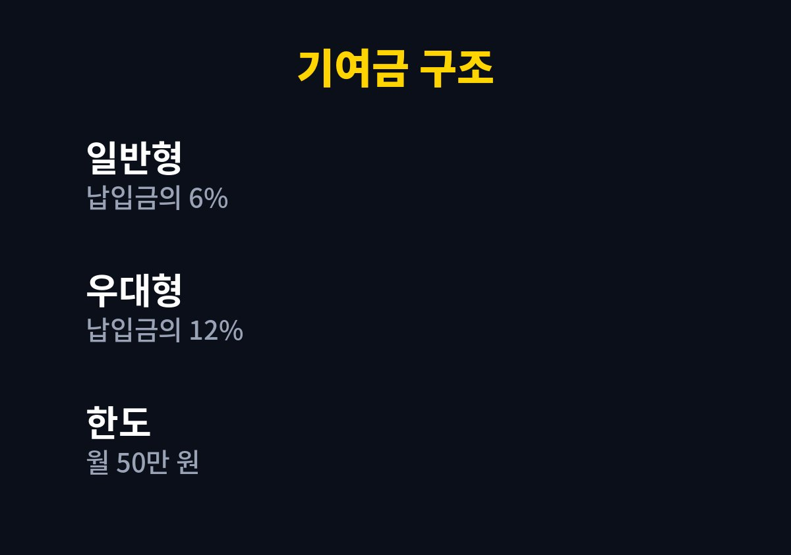
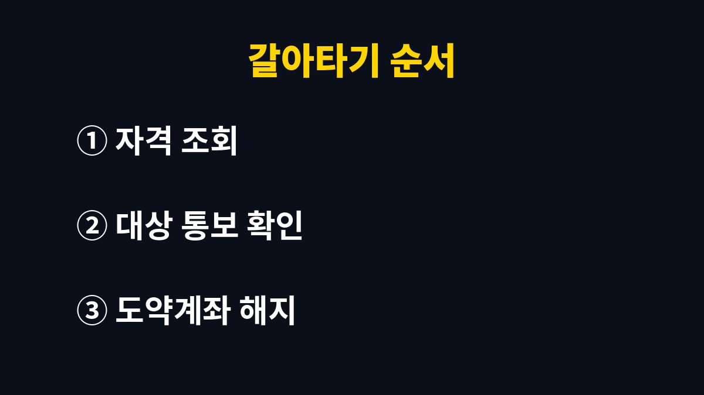

청년미래적금은 지금 새로 신청하는 단계가 아니라, 2차 신청을 통과해 가입 대상으로 통보받은 사람이 11월 27일까지 계좌를 여는 단계다.
통보를 받지 못했다면 다음 모집 공고를 기다려야 하고, 3차 일정은 아직 확정되지 않았다는 안내가 민간 금융 사이트 여러 곳에서 확인된다.
이 글에 적은 숫자는 민간 금융 안내를 서로 맞춰 본 것이라 공식 공고와 대조가 필요하다.
1차 신청은 6월 22일부터 7월 3일까지, 2차 신청은 10월 7일부터 10월 16일까지 받았다.
2차 심사는 11월 13일까지 진행됐고, 가입 대상자로 통보받은 사람만 11월 16일부터 27일까지 평일 오전 9시부터 오후 6시 30분 사이에 계좌를 열 수 있다.
토요일과 일요일은 빠진다.
통보 문자나 앱 알림을 받아 놓고 계좌 개설을 미루다 기간을 넘기면 어떻게 되는지는 안내가 확인되지 않으므로 취급 은행에 먼저 물어야 한다.
2차 신청 기간에 접수하지 않았거나 심사에서 가입 대상이 되지 못했다면 이번 회차에는 계좌를 열 수 없다.
3차 모집은 2027년 예산안이 확정된 뒤 공고된다는 설명이 있지만, 이는 민간 사이트의 전달이어서 날짜로 믿고 계획을 세우면 곤란하다.
1차에 가입한 사람은 2차에 다시 신청할 수 없고, 계좌는 모든 은행을 통틀어 1인 1개만 가능하다.
| 구분 | 일반형 | 우대형 |
|---|---|---|
| 정부기여금 | 월 납입금의 6% | 월 납입금의 12% |
| 월 기여금 한도 | 최대 3만 원 | 최대 6만 원 |
| 월 납입 한도 | 최대 50만 원 | 최대 50만 원 |
| 만기 | 3년(36개월) | 3년(36개월) |
| 36개월 기여금 합계 | 108만 원 | 216만 원 |

나이는 만 19세부터 34세까지이며, 군 복무 기간은 최대 6년까지 나이에서 빼 준다.
일반형 소득 기준은 총급여 6,000만 원(종합소득 4,800만 원) 이하이고 가구 기준 중위소득 200% 이하다.
우대형은 중소기업 재직자라면 총급여 3,600만 원 이하에 가구 중위소득 150% 이하를 본다.
우대형은 가입으로 끝나지 않고, 중소기업 근무 29개월 이상과 이직 2회 이하를 지켜야 한다.
못 지키면 기여금이 6% 비율로 내려간다.
총급여 6,000만 원을 넘고 7,500만 원 이하라면 기여금 없이 이자소득세 비과세만 받는 방식으로 가입할 수 있다는 안내가 있다.
다만 한 곳은 6,000만 원까지만 적어 두었다.
출처마다 다른 부분이라 공식 공고에서 가입 소득 상한을 직접 봐야 한다.
국세청에 신고된 소득이 없거나, 최근 3년 안에 금융소득종합과세 대상이었던 경우는 가입이 막힌다.
청년도약계좌와 청년미래적금은 동시에 유지할 수 없다.
갈아타려는 사람이 도약계좌부터 해지해 버리면 그동안 쌓은 기여금과 비과세 혜택을 잃는 일이 생긴다.
통장 앱에서 해지 버튼이 가까이 있어도 순서를 지켜야 한다.

기본금리는 연 5.0%이고 은행별 우대금리를 더해 최고 연 8%까지 안내된다.
우대금리는 급여 이체나 출금 실적 같은 은행별 조건이 붙고, 만기까지 유지해야 적용되는 항목이 있다.
그래서 광고에 적힌 8%를 그대로 이자로 계산하면 실제 수령액과 차이가 난다.
일반 중도해지를 하면 약정 이율보다 낮은 중도해지 이율이 적용되고, 이자소득 비과세와 정부기여금을 받지 못한다는 안내가 있다.
사망, 해외 이주, 퇴직, 폐업, 3개월 이상 치료가 필요한 질병이나 상해 같은 특별중도해지 사유가 인정되면 기여금과 비과세가 유지된다.
월 50만 원을 자유롭게 넣는 구조라 소득이 줄어드는 시기에는 납입액을 낮추는 쪽이 중도해지보다 손해가 덜하다.
이 부분은 사람마다 사정이 달라 은행 상담이 필요하다.
계좌를 열기 전에 신청 때 고른 취급 은행의 우대금리 항목을 다시 읽어 본다.
급여 이체 실적이나 청년재무상담 이수처럼 가입 뒤에 채워야 하는 조건은 달력에 적어 두지 않으면 만기에 가서 빠뜨리기 쉽다.
예를 들어 급여 통장이 다른 은행이라면 이체 실적 항목은 처음부터 받기 어렵다는 계산이 나온다.
이렇게 받을 수 있는 우대금리와 받기 어려운 항목을 미리 나눠 보면 은행 앱에 뜨는 최고금리와 내 몫의 차이가 보인다.
계좌 개설 대상자라면 11월 27일 전에 취급 은행 앱이나 지점에서 개설 가능 여부부터 확인한다.
통보를 못 받은 경우에는 금융위원회와 서민금융진흥원 공지를 주기적으로 열어 3차 일정이 올라왔는지 본다.
소득 구간이나 도약계좌 해지 시점이 헷갈릴 때는 청년금융콜센터 1397로 물어보는 편이 빠르다.
※ 2026년 11월 기준 공개된 정보를 정리한 글이며, 정확한 대상 요건·금액·신청 기간은 복지로·정부24·관할 주민센터의 공식 공고를 확인하길 바란다.